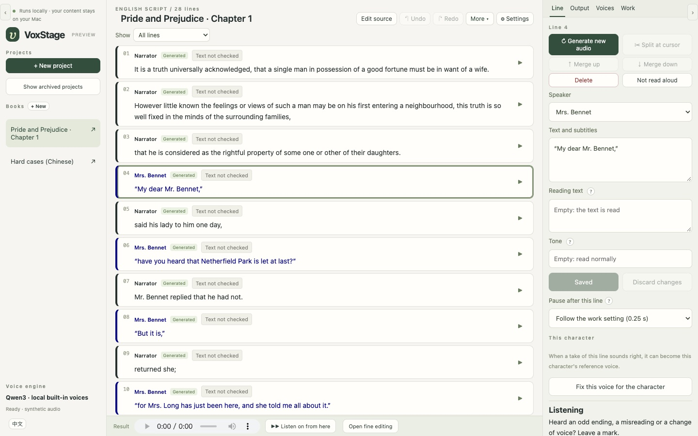
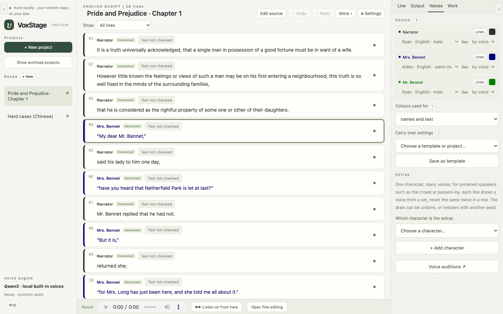
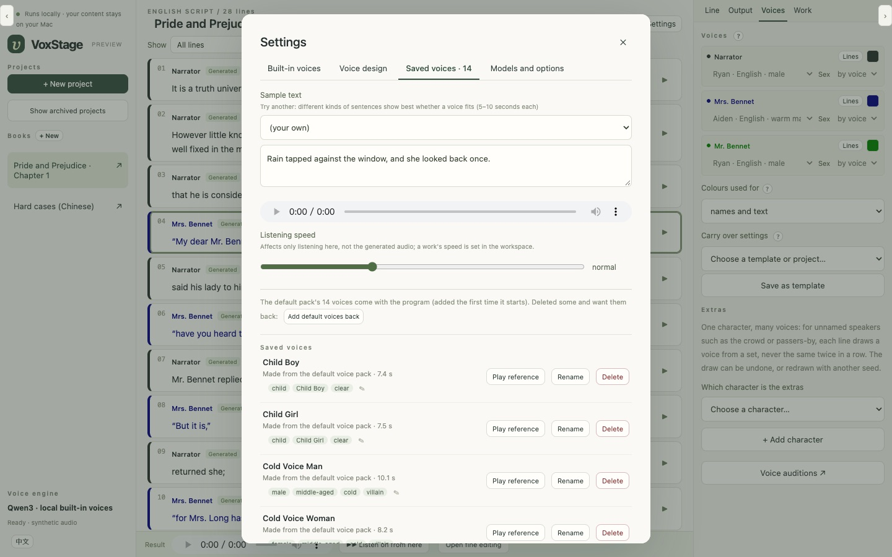

Every character,
its own voice.
VoxStage turns a story into a multi-voice recording. It drafts who says each line, gives every character a voice, lets you check and fix every sentence, and exports audio and subtitles — all on your own Mac, with local AI models. Nothing is uploaded.

What you can make with it
Anything where written words need to become voices — several of them, each one a character — without sending your material anywhere.
Audiobooks
Turn a novel, a short story or a whole book into a narrated, multi-voice audiobook: a narrator plus a voice for every character, chapter by chapter, exported as MP3 or WAV with subtitles.
Video voice-overs and narration
Voice a script for YouTube, explainers, documentaries or social video. Export line subtitles and an editing timeline you can import into DaVinci Resolve with every line in place.
Audio dramas and podcasts
Cast a radio play or a fiction podcast from one script: dialogue for many characters, crowds that speak together, pauses and pace set line by line.
Courses and training
Narrate e-learning modules, lessons and product walkthroughs in a steady voice — and regenerate just the line you changed when the material is updated.
Language learning
Make listening material in English or Chinese with clear, consistent voices; the optional text check flags a misread number or a character with several readings.
Hear your own writing
Authors and screenwriters: listen to your manuscript or scene read aloud with its cast, to catch what the eye misses — before it goes to an editor or an actor.
Games and animation drafts
Give characters placeholder voices for animatics, prototypes and pitch decks, and swap in the final performance later.
Your own voice, your own way
Design a new voice from a description, or clone your own voice from a recording to narrate your work — with your consent confirmed in the app.
How it works
Four steps from a text to a finished recording. You stay in charge at each one.
Paste the story
Plain prose, a marked script, a TXT, Markdown or Word file — or a whole book, cut into chapters by its headings.
Review the speakers
A local language model drafts who says each line. You confirm or correct it; uncertain lines are marked for you.
Give each character a voice
Fourteen designed voices come with it; design new ones from a description, or use a recording you have the right to use.
Generate, check, export
Listen line by line, fix a word or a pause, then export WAV or MP3, subtitles and an editing timeline.
Listen
Finished VoxStage audio from public-domain or self-written text. These clips have not been manually edited; the group voices use VoxStage's built-in mixing.
Pride and Prejudice, chapter 1
English · narrator and the Bennets · built-in voices
Hard cases in Chinese
Numbers, names and characters with several readings — the lines a TTS usually gets wrong
One line, many voices
Compare a tightly synchronized group with a more free-flowing crowd, in English and Chinese.
English · in unison
Four layers of one synthetic voice, starting together
“Welcome home, General! Your victory belongs to us all!”
Chinese · in unison
Four layers of one synthetic voice, starting together
“恭迎大将军回营！祝贺大将军再次踏平敌营，胜利凯旋！属下人等为大将军贺！”
English · crowd chatter
Different voices overlap around the same line
“He's back! We won! Look at those banners! I knew he would return!”
Chinese · crowd chatter
Different voices overlap around the same line
“快看！是大将军回来了！大将军又带领大家打了胜仗了！”
Your material stays on your computer. All of it. Always.
VoxStage is built for work you cannot or will not hand to a cloud service: an unpublished manuscript, a client's script, a product that is not announced yet, your own voice.
From first line to finished file
The text you paste, the voices you design or clone, every take, the edits and the exported audio are stored in one folder on your Mac. Nothing is uploaded at any step.
Local AI, not a cloud API
The speech and speaker models run on your Mac's own chip. After setup VoxStage needs no internet: the launcher holds the model libraries offline.
No account, no telemetry
There is nothing to sign up for and nothing is reported back: no usage data, no analytics, no crash reports. We never see what you make.
Nothing leaks through the tool
Using VoxStage does not expose your product information, your unreleased content or any personal data to us or to anyone else. Share a file only when you choose to.
Details in the privacy and security pages. The only downloads are the models and tools during setup.
What is in it
A workstation for the whole job, not a text box with a voice.
Speaker drafts you can trust to check
The text is never rewritten: the model only labels who speaks. Tags beside a line, habits and turn-taking back it up, and every uncertain answer is marked for review.
A voice library
Fourteen designed voices — narrators, adults, old and young — installed with the app. Design a voice from a sentence, keep the take you like, fine-tune it by changing only the words.
Books, not just chapters
A long text becomes a book of chapters that share voices, cast and settings, processed in batches that fit the Mac's memory.
Fix one sentence at a time
Regenerate a line, change its reading or pause, split or merge lines, or cut and stretch parts of a take in the fine editor — without touching the rest.
A second pair of ears
A local speech recogniser compares what was said with the script and flags missing or misread words and odd pauses — as leads for listening, never as a pass.
Ready for editing
WAV or MP3, line subtitles, a sample-accurate timeline and an XML timeline for DaVinci Resolve. Package a project or a whole book into one file and restore it later.
Private by design
Everything runs on the Mac. No account, no telemetry, no cloud. A phone or tablet on the same Wi-Fi can join with an access key, only when you turn it on.
English and Chinese
The interface is in English or Chinese; projects are English or Chinese, each with voices of its language.


What it does not do (yet)
- The speaker draft is a draft. On our reviewed test texts it still needs a person to check the dialogue; plan on reviewing every chapter.
- It needs an Apple Silicon Mac. 32 GB of memory is recommended for the larger voices and the speaker model; 16 GB runs the small voices only (estimated, not measured).
- It is a developer install for now — a terminal and about half an hour, most of it downloading models. There is no signed installer yet, and the install has so far been verified on the development Mac only; if it fails on yours, please open an issue.
- Only English and Chinese projects. The voices are synthetic; they are good, not a replacement for a skilled human narrator.
Install
On an Apple Silicon Mac with Homebrew:
brew install python@3.12 uv node git ffmpeg llama.cpp git clone https://github.com/hera2019/VoxStage.git && cd VoxStage uv venv --python 3.12 uv pip install --python .venv/bin/python -r requirements.lock.txt npm --prefix frontend ci && npm --prefix frontend run build .venv/bin/python scripts/setup_model.py # built-in voices, ~2.5 GB .venv/bin/python -m runtime.launcher
The install guide lists which models to download for your Mac's memory. The models (Qwen3-TTS, Qwen3) are downloaded from their publishers under their own licences.
Questions
Does VoxStage upload my text or audio?
No. Everything runs on your Mac with local AI models; your scripts, voices and finished audio stay in a folder on your computer. No account, no cloud, no telemetry.
Can I make an audiobook with it?
Yes — that is what it was built for. Paste a story or a whole book, review who speaks, and export MP3 or WAV with subtitles, chapter by chapter.
Is it free?
Yes, free and open source under the GNU AGPL-3.0. A commercial licence is available for closed-source or hosted use.
Which languages?
English and Chinese projects, each with voices of its language, and an English or Chinese interface.
Can it use my own voice?
Yes, from a recording you have the right to use; the app asks you to confirm it. See responsible use.
What Mac do I need?
Apple Silicon (M1 or later). 32 GB of memory is recommended; 16 GB runs the smaller voice models.
Licence
VoxStage is free and open source under the GNU AGPL-3.0. Building it into a closed-source product or a hosted service? A commercial licence is available from Houjun Co., Ltd.